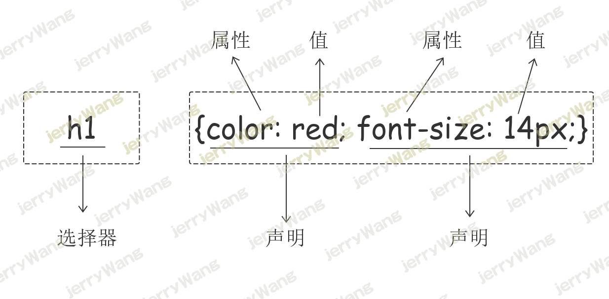
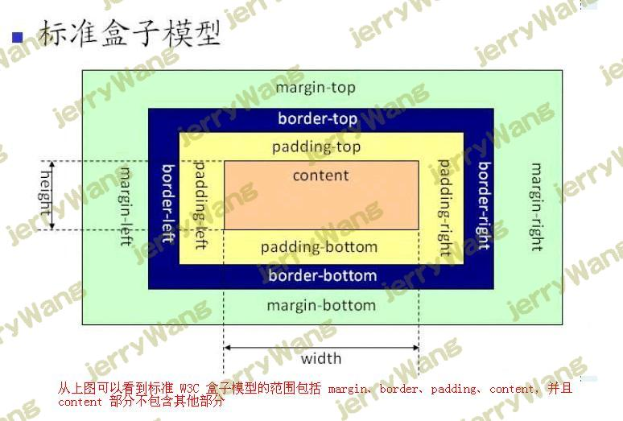

前端之CSS
CSS 介绍
CSS（Cascading Style Sheet，层叠样式表)定义如何显示HTML元素。
当浏览器读到一个样式表，它就会按照这个样式表来对文档进行格式化（渲染）。
CSS语法
CSS 实例
每个CSS样式由两个组成部分：选择器和声明。声明又包括属性和属性值。每个声明之后用分号结束。

CSS注释
1 | /*这是注释*/ |
CSS的几种引入方式
行内样式
行内式是在标记的style属性中设定CSS样式。不推荐大规模使用。
1 | <p style="color: red">Hello world.</p> |
内部样式
嵌入式是将CSS样式集中写在网页的
标签对的标签对中。格式如下：1 | <!DOCTYPE html> |
外部样式
外部样式就是将css写在一个单独的文件中，然后在页面进行引入即可。推荐使用此方式。
1 | <!DOCTYPE html> |
CSS选择器
基本选择器
元素选择器
最常见的 CSS 选择器是元素选择器。换句话说，文档的元素就是最基本的选择器。
1 | p {color: red;} |
选择器分组
假设希望 h2 元素和p 段落都有灰色。为达到这个目的，最容易的做法是使用以下声明：
1 | h2, p {color:gray;} |
ID选择器
在某些方面，ID 选择器类似于类选择器，不过也有一些重要差别。
1 | #i1 { |
类选择器
注意：
样式类名不要用数字开头（有的浏览器不认）。
标签中的class属性如果有多个，要用空格分隔。
1 | /* 类选择器 */ |
通用选择器
1 | /* 通用选择器 */ |
基本选择器代码展示
1 |
|
组合选择器
后代选择器
我们可以定义后代选择器来创建一些规则，使这些规则在某些文档结构中起作用，而在另外一些结构中不起作用。
1 | /* 后代选择器 */ |
1 | <!-- 后代选择器 --> |
子元素选择器
如果您不希望选择任意的后代元素，而是希望缩小范围，只选择某个元素的子元素，请使用子元素选择器（Child selector）。
1 | h1>strong { |
1 | <!-- 子元素选择器 --> |
相邻选择器
如果需要选择紧接在另一个元素后的元素，而且二者有相同的父元素，可以使用相邻兄弟选择器（Adjacent sibling selector）。
1 | h1 + p {margin-top:50px;} |
弟弟选择器
1 | /* 弟弟选择器 只能向下选 */ |
组合选择器代码展示
1 |
|
属性选择器
属性选择器可以根据元素的属性及属性值来选择元素。
1 |
|
伪类选择器
没有访问的超链接a标签样式：
格式：
1 | a:link { |
访问过的超链接a标签样式：
格式：
1 | a:visited { |
鼠标悬浮在元素上应用样式：
格式：
1 | a:hover { |
鼠标点击瞬间的样式：
格式：
1 | a:active { |
input输入框获取焦点时样式：
格式：
1 | input:focus { |
伪元素选择器
first-letter：杂志类文章首字母样式调整
格式：
1 | p:first-letter { |
before
用于在元素的内容前面插入新内容。
格式：
1 | p:before { |
在所有p标签的内容前面加上一个红色的*。
after
用于在元素的内容后面插入新内容。
1 | p:after { |
在所有p标签的内容后面加上一个蓝色的?。
CSS三大特性
继承性
给某一个元素设置一些属性，该元素的后代也可以使用，这个我们就称之为继承性
注意点：
1、只有以color、font-、text-、line-开头的属性才可以继承
2、a标签的文字颜色和下划线是不能继承别人的
3、h标签的文字大小是不能继承别人的，会变大，但是会在原来字体大小的基础上变大
ps:打开浏览器审查元素可以看到一些inherited from。。。的属性
应用场景：
通常基于继承性统一设置网页的文字颜色，字体，文字大小等样式
层叠性
CSS全称：Cascading StyleSheet层叠样式表，层叠性指的就是CSS处理冲突的一种能力，即如果有多个选择器选中了同一个标签那么会有覆盖效果
注意点:
1 层叠性只有在多个选择器选中了同一个标签，然后设置了相同的属性，
才会发生层叠性
2通过谷歌浏览器可以查看到，一些属性被划掉了
优先级
定义：当多个选择器选中同一个标签，并且给同一个标签设置相同的属性时，如何层叠就由优先级来确定。
l 大前提：直接选中的优先级大于间接选中(即继承而来的)
以下为直接选中
1 | <style type="text/css"> |
l 如果都是间接选中，那么谁离目标标签比较近，就选中谁
l 如果都是直接选中，并且都是同类型的选择器，那么就是谁写的在后面就选中谁
l 如果都是直接选中，并且是不同类型的选择器，那么就会按照选择器的优先级来层叠
id > 类 > 标签 > 通配符(也算直接选中) > 继承 > 浏览器默认（即没有设置任何属性）
优先级之！important
作用：还有一种!import方式来强制指定的属性的优先级提升为最高，但是不推荐使用。因为大量使用!import的代码是无法维护的。
#2、注意点：
1、!important只能用于直接选中，不能用于间接选中
2、!important只能用于提升被指定的属性的优先级，其他属性的优先级不会被提升
3、!important必须写在属性值分号的前面
优先级之权重计算
如果都是直接选中，并且混杂了一系列其他的选择器一起使用时，则需要通过计算机权重来判定优先级
计算方式
1 id数多的优先级高
2 id数相同，则判定类数多的优先级高
3 id数、class数均相同，则判定标签数多的优先级高
4若id数、class数、标签数均相同，则无需继续往下计算了，谁写在后面谁的优先级高
CSS属性设置
字体属性
font-weight：文字粗细
normal 默认值，标准粗细
bord 粗体
border 更粗
lighter 更细
100~900 设置具体粗细，400等同于normal，而700等同于bold
inherit 继承父元素字体的粗细值
font-style：文字风格
normal 正常，默认就是正常的
italic 倾斜
font-size：文字大小
fs：一般是12px或13px或14px
注意：
1、通过font-size设置文字大小一定要带单位，即一定要写px
2、如果设置成inherit表示继承父元素的字体大小值。
font-family：文字字体
font-family: “Microsoft Yahei”, “微软雅黑”, “Arial”, sans-serif
常见字体：
serif 衬线字体
sans-serif 非衬线字体
中文：宋体，微软雅黑，黑体
注意：
1、设置的字体必须是用户电脑里已经安装的字体，浏览器会使用它可识别的第一个值。
2、如果取值为中文，需要用单或双引号扩起来
文字属性简写
/font-weight: bolder;/
/font-style: italic;/
/font-size: 50px;/
/font-family: ‘serif’,’微软雅黑’;/
简写为
font: bolder italic 50px ‘serif’,’微软雅黑’;
color：文字颜色
取值 格式 描述
英文单词
color：red;
大多数颜色都有对应的英文单词描述，但英文单词终究有其局限性:无法表示所有颜色
rgb color：rgb(255,0,0)
什么是三原色？
red，green，blue
什么是像素px？
对于光学显示器，一整个屏幕是有一个个点组成，每一个点称为一个像素
点，每个像素点都是由一个三元色的发光元件组成，该元件可以发出三种颜
色，red，green，blue。
发光元件协调三种颜色发光的明亮度可以调节出其他颜色
格式：rgb(255,0,0);
参数1控制红色显示的亮度
参数2控制绿色显示的亮度
参数3控制蓝色色显示的亮度
数字的范围0-255，0代表不发光，255代表发光，值越大越亮
红色：rgb(255,0,0)
绿色：rgb(0,255,0)
蓝色：rgb(0,0,255)
黑色：rgb(0,0,0) # 所有都不亮
白色：rgb(255,255,255) # 所有都最亮
灰色：只要让红色/绿色/蓝色的值都一样就是灰色，而且三个值越小，越偏
黑色，越大越偏白色
rgba color：rgba(255,0,0,0.1);
rgba到css3中才推出，比起rgb多了一个a，a代表透明度
a取值0-1，取值越小，越透明
十六进制 color: #FF0000;
#FFEE00 其中FF代表R，EE代表G，00代表B
只要十六进制的颜色每两位都是一样的，那么就可以简写为一个，
例如#F00 等同于#FF0000
文本属性
text-align：规定元素中的文本的水平对齐方式。
值 描述
left 左边对齐 默认值
right 右对齐
center 居中对齐
justify 两端对齐
text-decoration：文本装饰
值 描述
none 默认。定义标准的文本，通常用来去掉a标签的下划线
underline 定义文本下的一条线。
overline 定义文本上的一条线。
line-through 定义穿过文本下的一条线。
inherit 继承父元素的text-decoration属性的值。
text-indent：首行缩进
#将段落的第一行缩进 32像素,16px;=1em;
p {
text-indent: 32px;
}
line-height：行高
背景属性
注意：没有宽高的标签，即便设置背景也无法显示
background-color
设置标签的背景颜色的
background-color: red;
background-color: rgb(0,255,0);
background-color: rgba(0,255,0,0.1);
background-color: #00ffff;
background-image
设置标签的背景图片
background-image: url(“images/2.jpg”);
background-image: url(“图片网址”);
注意：如果图片的大小没有标签的大小大，那么会自动在水平和锤子方向平铺和填充
background-size
设置标签的背景图片的宽、高
background-size: 300px 300px;
background-size: 100% 100%;
background-repeat
设置标签的背景图片的平铺方式
background-repeat: repeat; #默认值，在垂直和水平方向都重复
background-repeat: no-repeat; #不重复，背景图片将仅显示一次
background-repeat: repeat-x; #背景图片将在水平方向平铺
background-repeat: repeat-y; #背景图片将在垂直方向平铺
应用：可以在服务端将一个大图片截成小图片，然后在客户端基于平铺属性将小图重复
这样用户就以为是一张大图，如此，既节省了流量提升了速度，又不影响用户访问
例如很多网站的导航条都是用这种手法制作的
background-attachment
设置标签的背景图片在标签中固定或随着页面滚动而滚动
background-attachment: scroll; #默认值，背景图片会随着滚动条的滚动而滚动
background-attachment: fixed; #不会随着滚动条的滚动而滚动
background-position
图片默认都是在盒子的左上角，
background-position：属性，就是专门用于控制背景图片的位置
background-position：水平方向的值，垂直方向的值
1、具体的方位名词
水平方向：left，center，right
垂直方向：top，center，bottom
如果只设置了一个关键词，那么第二个值就是”center”。
2、百分比
第一个值是水平位置，第二个值是垂直位置。
左上角是 0% 0%。右下角是 100% 100%。
如果只设置了一个值，另一个值就是50%。
3、具体的像素（一定要加px单位）
例如：30px，50px等等
第一个值是水平位置，第二个值是垂直位置。
左上角是 0 0。单位是像素 (0px 0px) 或任何其他的 CSS 单位。
如果只设置了一个值，另一个值就是50%。
可以混合使用%和position值。
inherit
设置从父元素继承background属性值
以上背景属性的值均可以设置为inherit，代表从父元素继承background属性
分组和嵌套 pass
CSS网页布局
网页布局简介
布局可以理解为排版，我们所熟知的文本编辑类工具都有自己的排版方式，比如word，nodpad++等等。
而网页的布局方式指的就是浏览器这款工具是如何对网页中的元素进行排版的。
网页布局一般有三种常用的排版方式：标准流，浮动流和定位流。
标准流
盒子模型
所有HTML元素可以看作盒子，在CSS中，”box model”这一术语是用来设计和布局时使用。
CSS盒模型本质上是一个盒子，封装周围的HTML元素，它包括：边距，边框，填充，和实际内容。
盒模型允许我们在其它元素和周围元素边框之间的空间放置元素。

Margin(外边距) 清除边框外的区域，外边距是透明的。
Border(边框) 围绕在内边距和内容外的边框。
Padding(内边距) 清除内容周围的区域，内边距是透明的。
Content(内容) 盒子的内容，显示文本和图像。
块级元素和内联元素(行内元素)
块级元素
总是在新行上开始，占据一整行；
高度，行高以及外边距和内边距都可控制；
宽度缺省是它的容器的100%，除非设定一个宽度
它可以容纳内联元素和其他块元素。
内联元素
和其他元素都在一行上；
高，行高及外边距和内边距部分可改变；
宽度只与内容有关；
行内元素只能容纳文本或者其他行内元素。
外边界只能对左右起作用，内边距都起作用
块级元素和内联元素的转换
display: block | inline | inline-block
标准文档流
1 行内元素不占据单独的空间，依附于块级元素，行内元素没有自己的区域。它同样是DOM树中的一个节点，在这一点上行内元素和块级元素是没有区别的。
2 块级元素总是以块的形式表现出来，并且跟同级的兄弟块依次竖直排列，左右自动伸展，直到包含它的元素的边界，在水平方向不能并排。
浮动流
什么是浮动流
l CSS的Float(浮动)，元素可以围绕其他元素向左或向右被推动
l 设置浮动，脱离普通文档流
l 浮动元素都会变为块级元素
l 如果不设置宽度，会尽可能的窄
l 浮动元素之后的元素将围绕它 浮动元素之前的元素将不会受到影响。
怎么设置浮动？
.item {
float:left
}
.item {
float:right
}
/float 属性的默认值是 none 表示没有浮动/
清除浮动
浮动框旁边的行框被缩短，从而给浮动框留出空间，行框围绕浮动框。
因此，创建浮动框可以使文本围绕图像：
要想阻止行框围绕浮动框，需要对该框应用 clear 属性。clear 属性的值可以是 left、right、both 或 none，它表示框的哪些边不应该挨着浮动框。
clear: both
clear: left
clear: right
定位流
相对定位
l 使用相对定位的盒子,会相对于它原来的位置,通过偏移指定的距离,到达新的位置.
l 使用相对定位的盒子,仍在标准流中,它对父块好兄弟盒子没有任何影响。
.box {
position: relative;
top: 10px;
left: 20px;
}
绝对定位
l 使用绝对定位的盒子以它”最近”的一个”已经定位”的”祖先元素”为基准进行偏移. 如果没有已经定位的”祖先元素”, 那么会以浏览器窗口为基准进行定位
l 绝对定位的框从标准流中脱离,这意味着它们对其后的兄弟盒子的定位没有影响,其他的盒子就好像这个盒子不存在一样
.box {
position: absolute;
top: 10px;
left: 20px
}
固定定位
以浏览器窗口为基准
窗口滚动时,依然保持位置不变
.box {
position: fixed;
top: 10px;
left: 20px;
}
 微信
微信 支付宝
支付宝